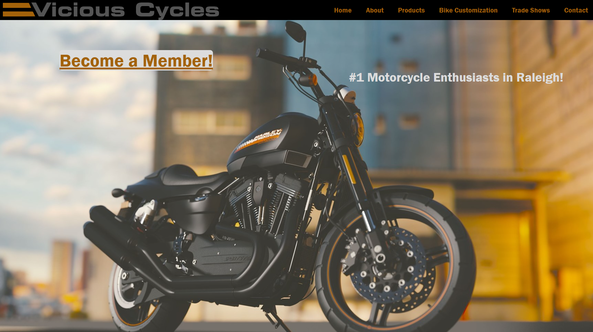

Scarlett Coyle
Front-End Web Developer
I am an aspiring front-end web developer with a specialized interest in UX/UI design. My goal is to become a so called "unicorn" with knowledge of both development and design.
Featured Projects
View selected projects below. More information can be found at Scarlett's Blog.
Vicious Cycles Website
For my first web design project, I created a website for Vicious Cycles to educate and attract viewers to their motorcycles and trade shows. I used black, grey, and white colors with a dusty orange accent color to match their logo. I had difficulties with CSS, specifically flexbox and positioning. I stuck to it and managed to at least create a visually pleasing desktop format. As far as the mobile design, there is much that I can improve on. Viewed on a mobile device, the Vicious Cycles website's text is too small for my liking and the positioning is off. I was focused more so on responsiveness than the mobile design. For my next project, I will learn more about responsive mobile design so that I can better implement my visions.
Vicious Cycles WebsiteWork Experience
As I am still in college completing my degree, I have not yet had any work experience related to web development.
Education
Wake Technical Community College - Raleigh, NC
Associates in Applied Science for Web Design, 2018-Current
As stated directly on Wake Techs website for degree description:"Prepares learners to design, develop and maintain professional, high-quality responsive websites, create digital media and integrate web technologies to support an organization’s needs. Graduates will be proficient in HTML, CSS, JavaScript, web analytics, social media, user experience design and internet branding/marketing, along with various supporting technologies and tools. Graduates will be able to support the web design needs of businesses and organizations in a wide variety of industries or work as a freelance web designer."